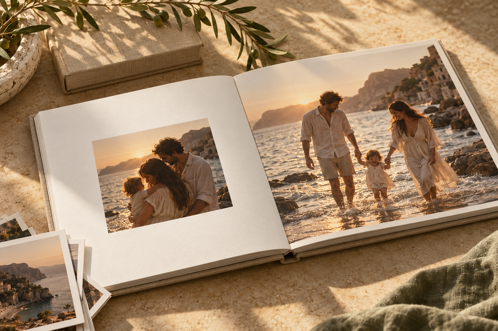

בוחרים את הסיפור
משפחה, חופשה או שנה של רגעים. מתחילים בבחירת התמונות שתרצו לשמור.
החיבוק ההוא. הטיול ההוא. הצחוק שאי אפשר לשכוח.
נהפוך את התמונות שלכם לאלבום מעוצב —
כזה שפותחים שוב. ושוב.

בין צילומי המסך לתמונות של אתמול מסתתרים החיים עצמם.
אני כאן כדי לתת להם מקום: לבחור, לחבר ולעצב סיפור
שמרגיש בדיוק כמוכם. מהמסך הקטן אל שולחן הסלון.
מהרגעים הגדולים ועד יום שלישי רגיל.
דווקא הדברים הקטנים הופכים לסיפור הכי יפה.
הדמיות להמחשת הכיוון העיצובי · כל אלבום נוצר סביב התמונות שלכם
משפחה, חופשה או שנה של רגעים. מתחילים בבחירת התמונות שתרצו לשמור.
מחברים את התמונות לקצב, לצבעים ולדפים. עיצוב אישי עם מקום לנשום.
אחרי אישור העיצוב ותיאום פרטי ההדפסה, הסיפור שלכם מוכן לצאת מהמסך.
אפשר להתחיל מסיפור אחד או מאוסף קטן. בחירת התמונות כאן מאפשרת לראות מה כבר אספתם, בלי להעלות אותן לשרת.
בהחלט. כדאי לבחור את הקבצים המקוריים באיכות הגבוהה ביותר. ההתאמה להדפסה תיבדק כחלק מתהליך העבודה.
לפי מספר העמודים, גודל האלבום, הכריכה והיקף העיצוב. את כל הפרטים מתאמים לפני שמתחילים.
אלבום אחד מתחיל ברגע אחד קטן.